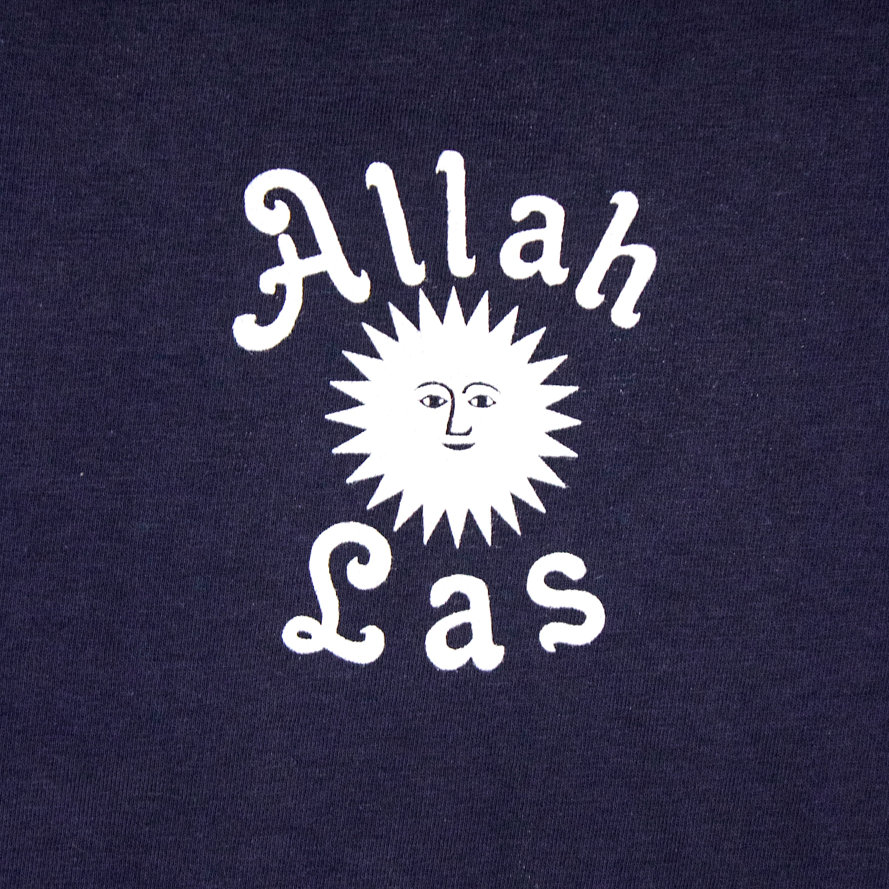

Eles lançaram seu primeiro disco de 7 polegadas em 2011, Catamarã / Long Journey, produzido por Nick Waterhouse para sua gravadora Pres. Em 2012, eles lançaram um segundo single, Tell Me (O que está em sua mente) / Sacred Sands, produzido novamente por Nick Waterhouse mas desta vez para sua nova gravadora, Lazer Inovadora. Um usuário comentou que "o seu som está mergulhada nas sensibilidade pop de The Zombies e The Kinks, atado com Northern Soul, funk lo-fi ea influência cada vez mais duradouro de Arthur Lee e amor". Allah Las foram apresentados em uma sessão Daytrotter em Maio de 2012 e seu desempenho de catamarã foi nomeado um dos 200 melhores canções Daytrotter do ano. Em setembro de 2012, Allah-Las lançaram seu auto-intitulado debut LP, também produzido por Nick Waterhouse de Lazer Inovadora. O álbum tem sido descrito como um "tesouro perdido desenterrou da areia e polido para um brilho perfeitamente desbotada" e "um registro clássico debut, por um lado, imerso em melancholic nostalgia, mas por outro, entusiasmado com um charme intemporal". Em outubro de 2012, World Café da NPR contou com duas canções de Allah-Las, observando que "o música capta os sons despreocupado, arejada da California ... romantismo sonhador [com] uma vibração que pode sentir tanto alegre e melancólico ". Allah-Las completou sua primeira turnê em 2011, até a costa da Califórnia de San Diego a San Francisco. Eles visitaram a Costa Leste e da Europa em 2012, onde seu primeiro show em Londres, Reino Unido foi descrito pelo The Guardian como "um feliz 45 minutos em uma noite fria".
